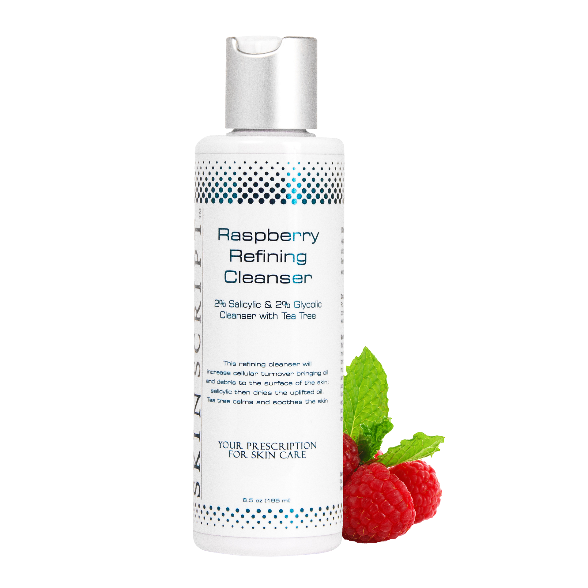

Cleansers
Glycolic-CleanserFor all skin types (except rosacea and sensitive skin). The Glycolic Cleanser is a gel-based foamy cleanser infused with a combination of alpha hydroxy acids. It renews the skin by removing the uppermost layer of dead skin cells to reveal a bright, smooth skin surface. |
|
Pomegranate Antioxidant CleanserFor normal to dry skin. The Pomegranate Antioxidant Cleanser is a moderately rich cream based cleansing option that is infused with a wide array of antioxidants, nutritional elements, and oils to restore and protect the skin. |
|
|  |
Raspberry Refining CleanserFor normal, combination, oily and acneic skin. The Raspberry Refining Cleanser is a unique foamy cleanser that rebalances and improves skin texture while its active ingredients purify and restore vitality to skin. |
Glycolic-CleanserFor all skin types (except rosacea and sensitive skin). The Glycolic Cleanser is a gel-based foamy cleanser infused with a combination of alpha hydroxy acids. It renews the skin by removing the uppermost layer of dead skin cells to reveal a bright, smooth skin surface. |
Pomegranate Antioxidant CleanserFor normal to dry skin. The Pomegranate Antioxidant Cleanser is a moderately rich cream based cleansing option that is infused with a wide array of antioxidants, nutritional elements, and oils to restore and protect the skin. |
Raspberry Refining CleanserFor normal, combination, oily and acneic skin. The Raspberry Refining Cleanser is a unique foamy cleanser that rebalances and improves skin texture while its active ingredients purify and restore vitality to skin. |
Glycolic-Cleanser
For all skin types (except rosacea and sensitive skin). The Glycolic Cleanser is a gel-based foamy cleanser infused with a combination of alpha hydroxy acids. It renews the skin by removing the uppermost layer of dead skin cells to reveal a bright, smooth skin surface.
Pomegranate Antioxidant Cleanser
For normal to dry skin. The Pomegranate Antioxidant Cleanser is a moderately rich cream based cleansing option that is infused with a wide array of antioxidants, nutritional elements, and oils to restore and protect the skin.
Raspberry Refining Cleanser
For normal, combination, oily and acneic skin. The Raspberry Refining Cleanser is a unique foamy cleanser that rebalances and improves skin texture while its active ingredients purify and restore vitality to skin.